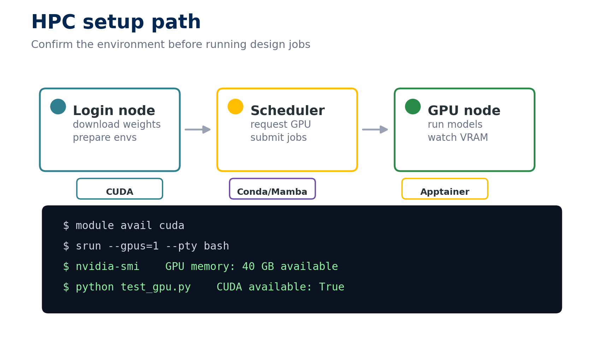

Monday: Tool Installation
Historical day 1 · prepare a reproducible environment, then install only the tools your route needs
Overview
Monday preserves the first stage of the original in-person bootcamp: local setup, HPC orientation, and a broad tour of the prediction and design toolchain. In the asynchronous course, you are not expected to install every tool before learning anything else. Verify the foundation, choose a workflow, and capture a smoke-test artifact for each tool you intend to use.
- Request GPU resources and distinguish login-node, CPU-node, and GPU-node work.
- Record the Python, CUDA, PyTorch, container, model, and hardware context behind a run.
- Select a structure predictor, sequence designer, and backbone/binder route for a stated problem.
- Run a minimal smoke test and recognize the output that proves a tool is usable.
- Diagnose common environment, path, weight, quota, and GPU-memory failures without losing the scientific learning objective.

Prepare and download on the login node, request resources through the scheduler, run on the appropriate compute node, and save the command, environment, log, and output that verify the result.
Monday contract
| Core path | Full bootcamp | |
|---|---|---|
| Active effort | 4–8 hours, depending on existing setup | 10–20 hours across several sessions |
| Waiting time | Allow another 2–12 hours for downloads, environment solves, weights, and scheduler queues | Potentially days for all databases, builds, permissions, and test jobs |
| Compute | Laptop for pre-work; Linux GPU/HPC for local model smoke tests | Linux GPU/HPC, container runtime, 50–100 GB tool storage, and tool-specific accounts/licenses |
| Output | Readiness note, GPU verification log, smoke-test output for each chosen tool, and a tool-choice memo | The core evidence plus tested environments for the broader tool set |
| Finished when | Another learner could identify your environment and rerun your smallest successful test | Each attempted install is versioned and labeled passed, failed-with-evidence, or intentionally skipped |
Active effort does not include passive downloads or jobs. Stop and record a reproducible failure instead of repeatedly rebuilding an environment without new evidence.
Choose a Monday route
Core path
- Complete the readiness checks below, Common HPC Setup, and the preflight in Reproducible Setup & Compute Fallbacks.
- Set up PyMOL and VS Code; take the Python refresher only if its readiness questions expose a gap.
- Prepare one structure-prediction route: LocalColabFold for local AlphaFold2, or plan to use the hosted notebook in Tuesday.
- Prepare LigandMPNN if you will sequence-design generated backbones.
- Prepare only the generator/pipeline your project will use. Wednesday teaches the original RFdiffusion workflow; BindCraft is an end-to-end alternative. RFdiffusion2 is a distinct, newer atom-level scaffolding tool and is not a drop-in replacement for the original lesson.
- Add ESMFold only if you plan to run Tuesday’s comparison locally.
Full-bootcamp path
Complete the core path, then work through the remaining installation pages as a survey of the 2025 tool landscape. Keep separate environments. An unsuccessful installation with a complete diagnostic record is more useful than an unexplained “done” checkmark.
Reference path
Jump to the tool you need, but first read its Preparation and Resource Requirements. If it depends on CUDA, containers, SLURM, or shared storage that is unfamiliar, return to Common HPC Setup.
Pre-work and readiness
| Module | Core status | Active time | Do | Evidence |
|---|---|---|---|---|
| Environment & GitHub | Required unless already verified | 45–90 min | Create the environment and run the verification script | Environment export plus successful verification output |
| PyMOL & VS Code | Required | 45–90 min | Open a PDB, make a selection, save a figure, and verify editing/terminal access | PNG plus the commands used |
| Python refresher | Readiness-based | 60–120 min | Complete the protein-sequence utilities | Passing output plus one sentence naming the hardest concept |
| Common HPC Setup | Required for local GPU work | 60–120 min | Request a GPU and run the PyTorch check | Job script, scheduler log, nvidia-smi, and CUDA-aware PyTorch output |
| Reproducible setup & fallbacks | Required for local model work | 20–40 min | Run the course preflight and choose a compute/analysis fallback | Saved preflight report plus version and fallback note |
No HPC route: complete the laptop pre-work, use hosted services/notebooks where permitted, and record which local steps you are replacing. You can analyze supplied outputs when a GPU or account is unavailable.
Tool installation map
The time below is hands-on setup and inspection time; downloads, dependency solving, databases, and queued smoke tests are additional.
| Tool | Role | Route | Typical active time | Key resource constraint | Evidence of a usable setup |
|---|---|---|---|---|---|
| LocalColabFold | MSA-based prediction | Core if running AF2 locally | 45–90 min | GPU; database/server access | Ranked PDB, scores JSON, PAE image, and log |
| LigandMPNN | Context-aware sequence design | Core for backbone-to-sequence work | 45–75 min | GPU recommended; model weights | FASTA output, score file, and exact command |
| RFdiffusion2 | Atom-level/ligand scaffolding | Reference/full | 45–90 min | 16+ GB GPU; Apptainer; 10–20 GB | Demo output directory and run log |
| ESMFold | Fast single-sequence prediction | Core if running Tuesday locally | 45–75 min | GPU memory scales with length | test_result.pdb, confidence summary, and log |
| OpenFold | AF2 reproduction/research | Reference/full | 60–120 min | Build compatibility; optional ~2 TB databases | PDB plus pLDDT/pTM output |
| Chai-1 | Complex/multimodal prediction | Core only if using local Chai | 45–90 min | 16–24+ GB GPU; weights | Ranked complex and confidence outputs |
| Boltz-2 | Structure and affinity prediction | Reference/full | 45–90 min | GPU; model downloads | Prediction directory plus confidence/affinity files |
| DiffDock-PP | Protein–protein docking | Reference/full | 60–120 min | Older dependency/CUDA compatibility | Ranked docked PDBs and log |
| PLACER | Protein–ligand ensemble prediction | Reference/full | 45–90 min | GPU; weights | Pose ensemble, scores, and run configuration |
| BindCraft | End-to-end binder pipeline | Core alternative/full | 60–120 min | 24+ GB GPU; PyRosetta; long campaigns | Successful example design folder and settings files |
| ESM3 | Multimodal protein generation | Optional/reference | 45–90 min | Hugging Face access; GPU | Generated sequence/structure and sampling settings |
| RFdiffusion All Atom | All-atom design predecessor | Optional/reference | 45–90 min | 16+ GB GPU; container | Test structure and run log |
Pick tools by question
| If your question is… | Start with… | Compare or add when… |
|---|---|---|
| “What fold is compatible with this sequence?” | LocalColabFold/AlphaFold2 | ESMFold for speed or an MSA-independent comparison |
| “How might this protein, ligand, ion, or nucleic acid complex assemble?” | Chai-1 or another complex predictor | Boltz-2 when affinity ranking is part of the question |
| “What sequence fits this backbone and interface context?” | LigandMPNN | Use several temperatures/seeds and validate structures afterward |
| “Can I generate a backbone around an interface or motif?” | Original RFdiffusion workflow in Wednesday | RFdiffusion2/RFdiffusion-AA for atom-level or ligand-centered constraints |
| “Can I automate binder generation and filtering?” | BindCraft | Use a component workflow when you need more control over each stage |
| “How might two proteins or a protein and ligand dock?” | DiffDock-PP or PLACER | Use Thursday’s docking framework to decide what sampling/scoring evidence is still missing |
Monday evidence checkpoints
Check an item only after the named file or record exists in your evidence portfolio.
If you are stuck
- Confirm that downloads run where internet access is allowed and GPU tests run on a GPU node.
- Save the exact error and active environment before changing anything.
- Compare Python, PyTorch, CUDA, container, GPU, and model versions with Reproducible Setup & Compute Fallbacks.
- Run the smallest test with one short input and a new output directory.
- If access remains blocked, complete the lesson with known-good outputs and return to the installation separately.
- Search the tool repository, then report a course issue with the evidence above.
Next step
Proceed when the core evidence exists—not when every optional tool is installed. Tuesday begins with structure inspection and then uses AlphaFold2/ESMFold outputs to practice confidence-aware interpretation.